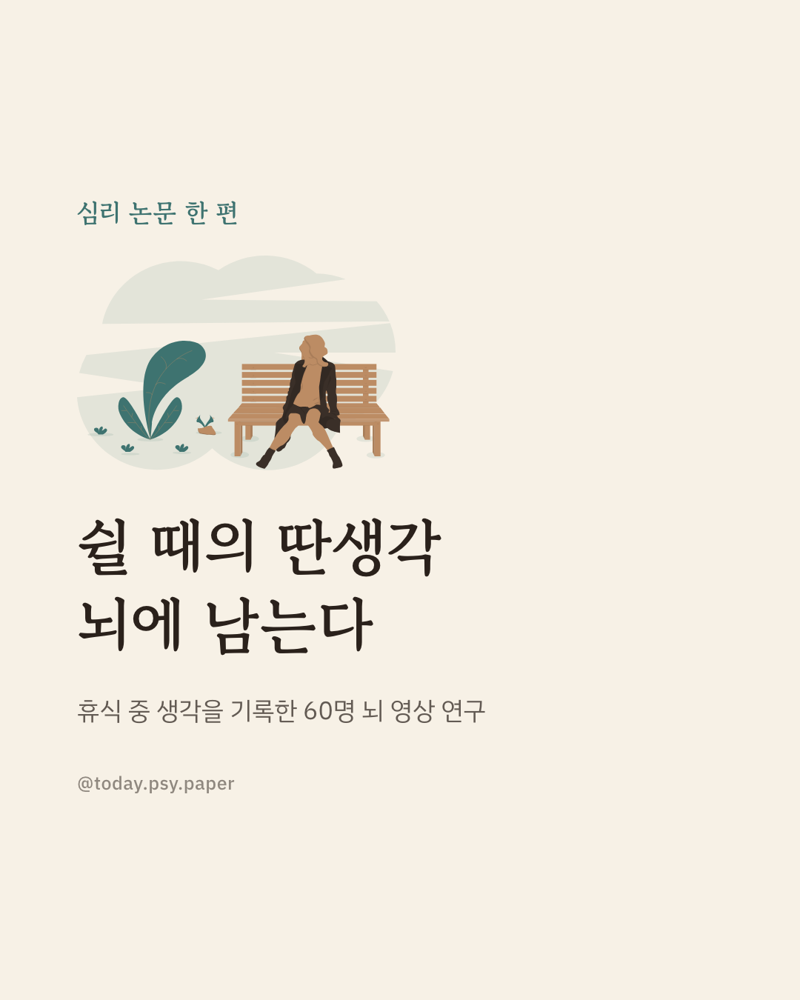
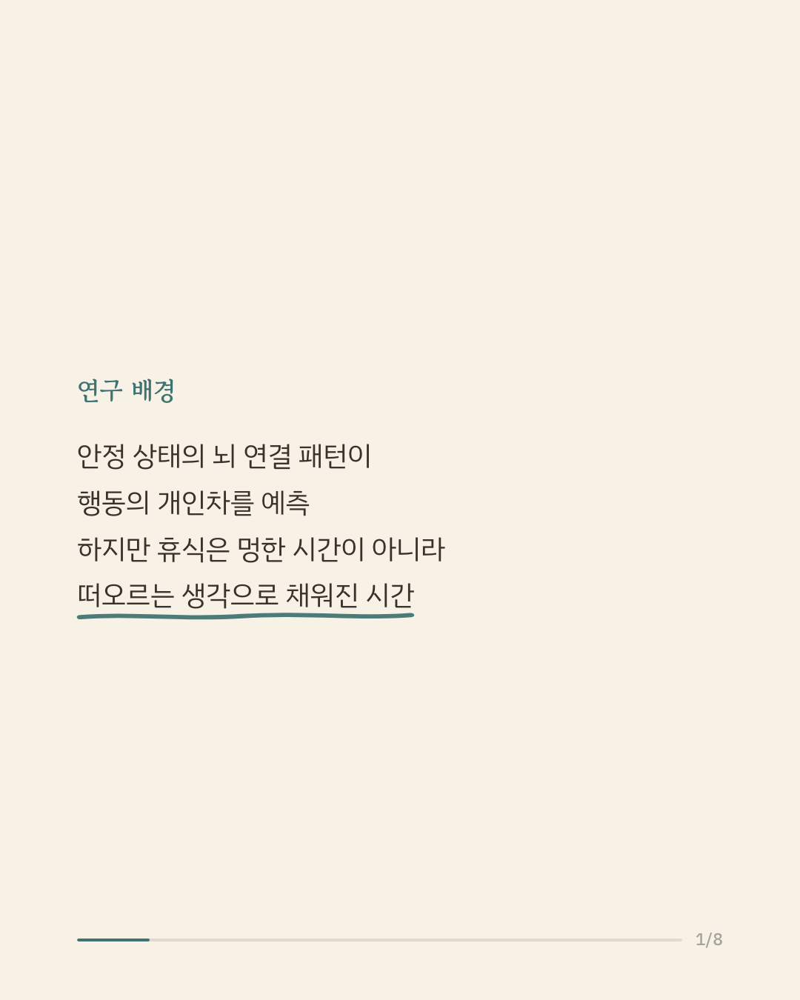
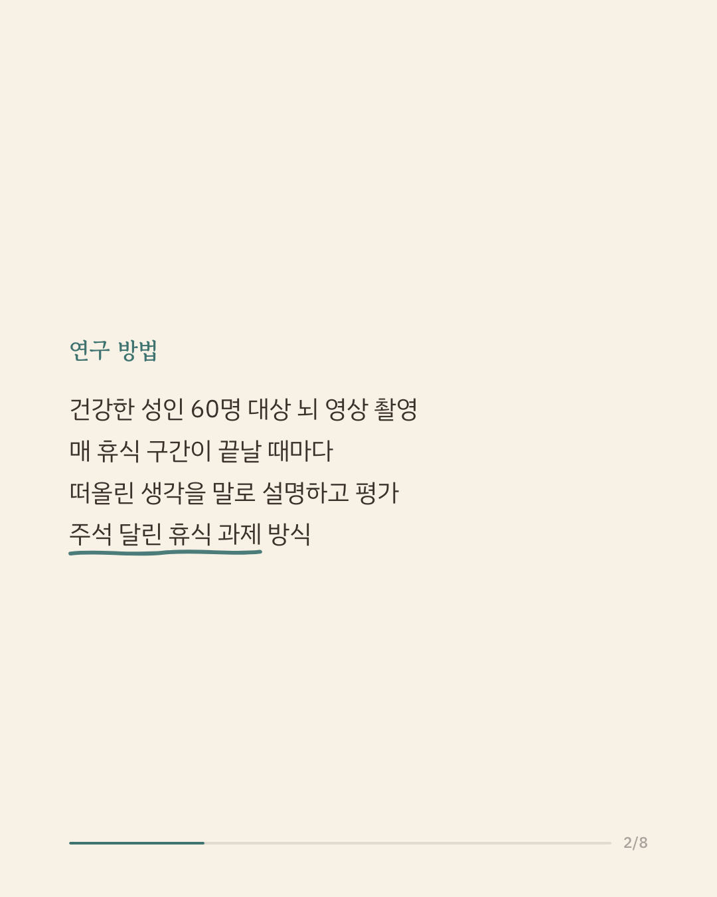
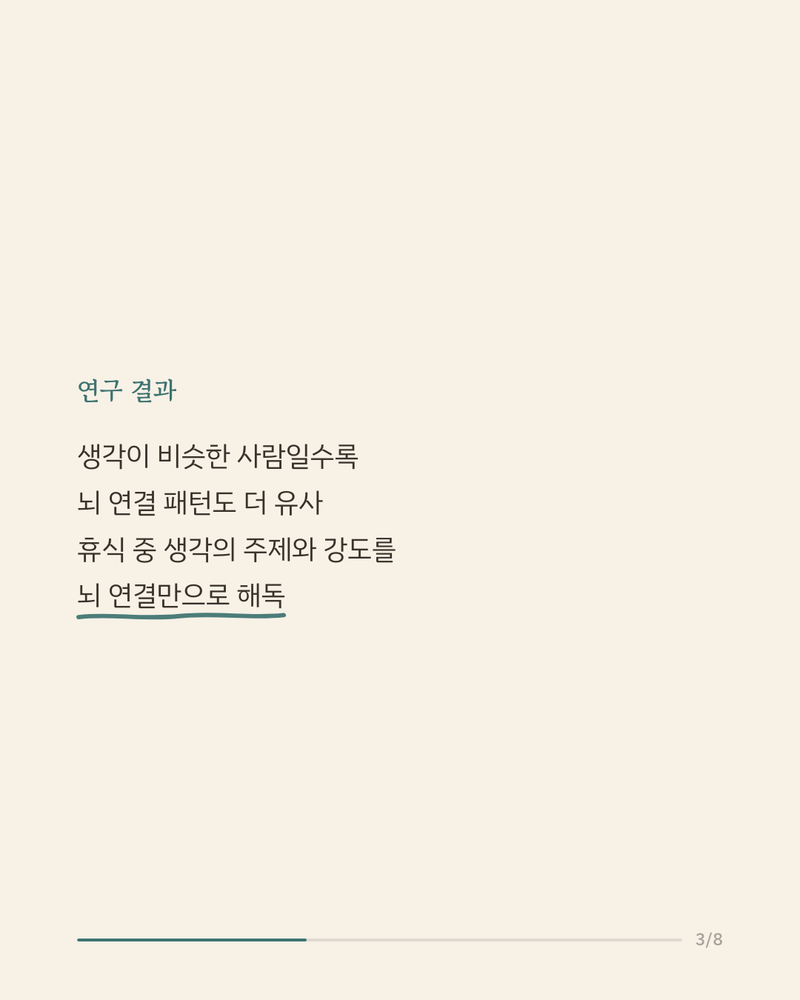
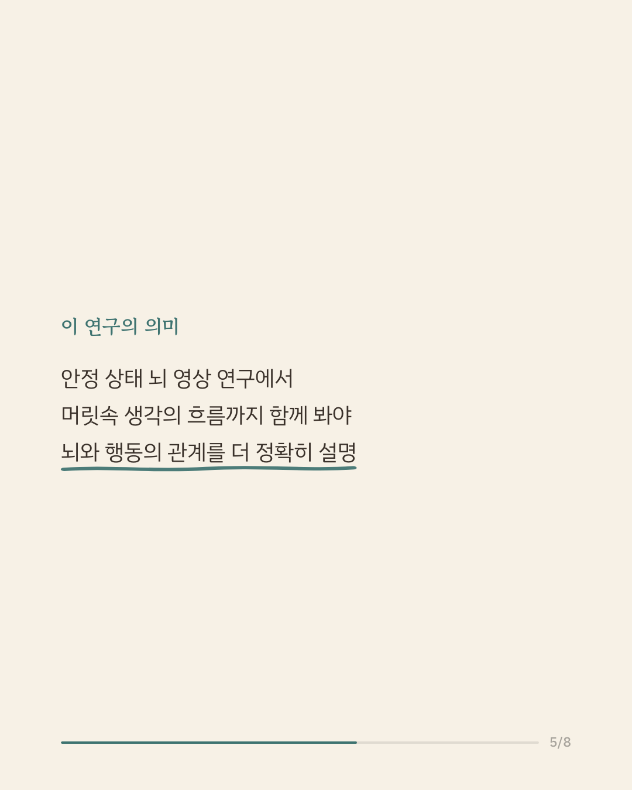
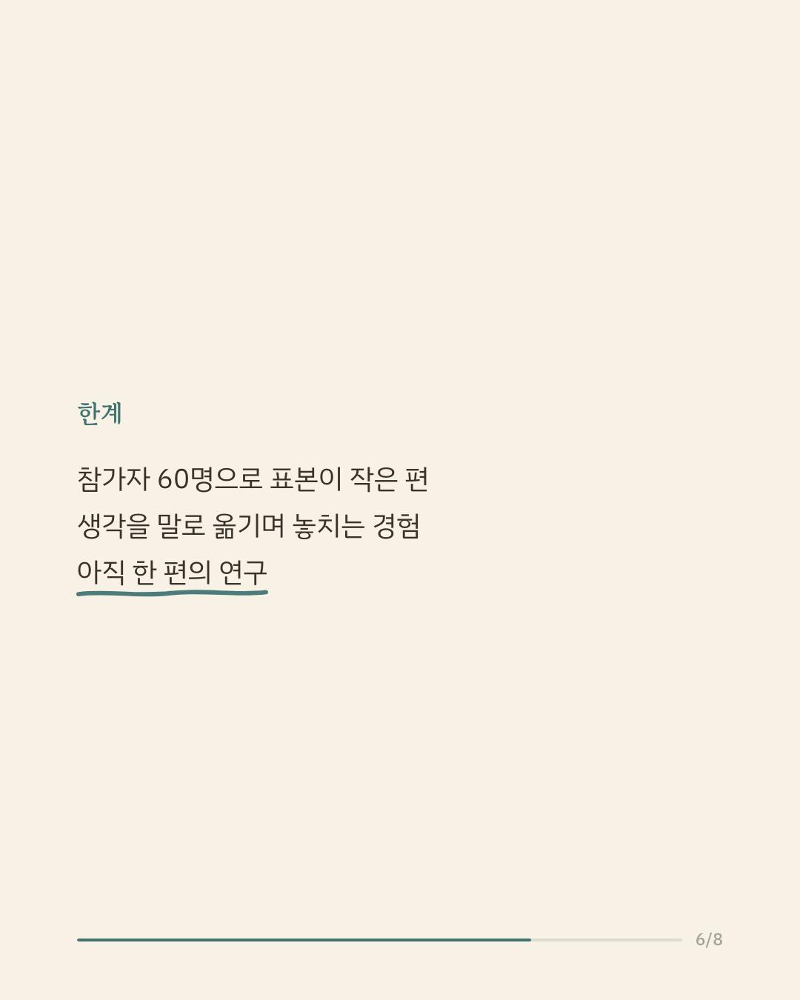
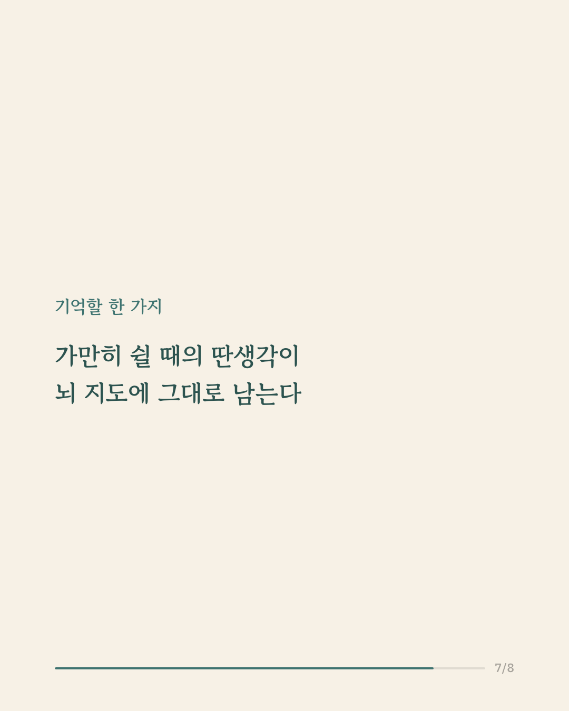
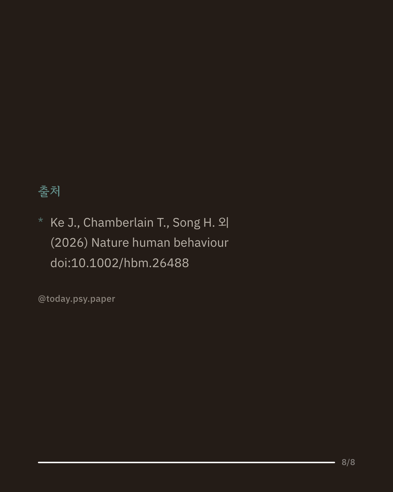

우리가 아무 과제 없이 쉴 때도 뇌의 여러 영역은 서로 연결된 채 활동하며, 이 '안정 상태 연결'은 사람마다 다른 행동 특성과 관련이 있다고 알려져 왔습니다. 그런데 쉬는 시간은 완전히 빈 시간이 아니라 여러 생각과 딴생각이 떠오르는 시간이기도 합니다. 연구진은 건강한 성인 60명이 뇌 영상 촬영 중 매 휴식 구간이 끝날 때마다 방금 떠올린 생각을 말로 설명하고 평가하게 했습니다. 그 결과 생각의 내용이 비슷한 사람들끼리는 뇌 연결 패턴도 더 비슷했고, 휴식 중 떠올린 생각의 주제와 강도를 뇌 연결만으로 어느 정도 추정할 수 있었습니다. 이렇게 찾아낸 뇌 표지는 별도의 대규모 공개 데이터 908명에게도 적용되어, 휴식 중 생각 패턴이 긍정적·부정적 성향의 개인차와 관련이 있었습니다. 안정 상태 뇌 영상으로 사람의 행동을 이해하려면 촬영 중 머릿속에 무엇이 오갔는지를 함께 살펴야 한다는 점을 보여 줍니다. 다만 참가자 수가 60명으로 크지 않고, 떠오른 생각을 말로 옮기는 과정에서 포착되지 않는 경험이 있을 수 있습니다. 단일 연구이므로 확대 해석은 조심해야 합니다. 출처: Nature Human Behaviour (2026), 'Ongoing thoughts at rest reflect functional brain organization and behaviour' #인지신경과학 #뇌영상연구 #심리학연구 #논문리뷰 #딴생각
python3 publish.py 42649254